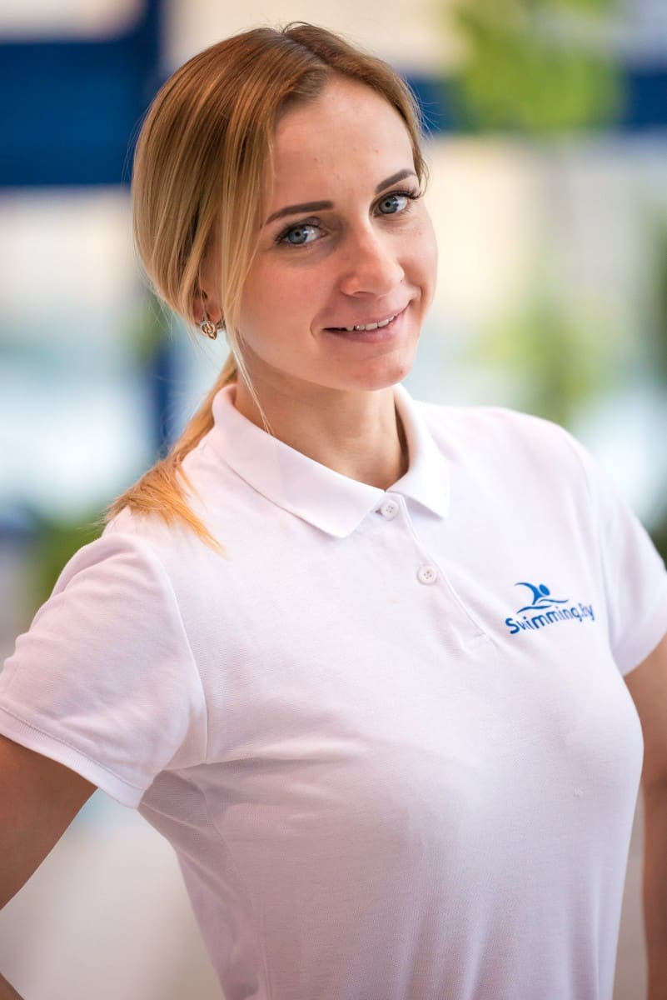

James
swimmer with over ten
years of experience in
coaching the sport, whose
use of visual aid and in-the-
water training sets him
apart from other instructors.

Anna
at Trinity High School and
Retired Nationally Ranked
Swimmer. Trained with
Olympic Swim Coach Dick
Shoulberg 
Mary
and record holder, former
college competitor with
NCAA Division II All-
American Honors
Billy
my second nature. 20+
years swimming coaching
experience. Certified CPR
and NYC lifeguard